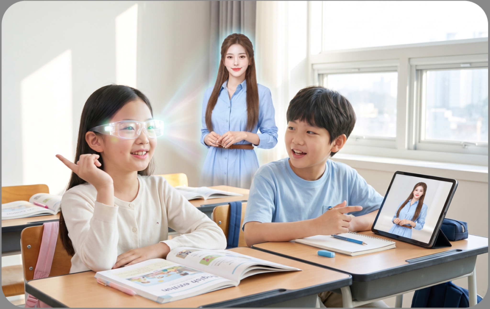

FROM LANGUAGE AI TO DIGITAL HUMAN
아동의 발화, 문장 구성, 오류와 반응 패턴을 기반으로
학습 상황에 적합한 상호작용을 제공합니다.
ELM을 표정·음성·립싱크·제스처를 갖춘
2D·3D 디지털휴먼 인터페이스로 구현합니다
ELEA TECHNOLOGY
ELEA는 아동 언어 데이터로 고도화한 자체 언어모델 ELM과
평가·피드백 엔진,
AI 디지털휴먼 인터페이스를 연결해 아이들이 말하고 배우는 방식에 맞는 학습 경험을 제공합니다.ELEA는 아동 언어 데이터로 고도화한 자체 언어모델 ELM과 평가·피드백 엔진,
AI 디지털휴먼 인터페이스를 연결해 아이들이 말하고 배우는 방식에 맞는 학습 경험을 제공합니다.
아동 발화·쓰기·오류·반응 데이터

E Cloud AI Language Model

말하기·쓰기 분석과 학습 피드백

대화하고 반응하는 사람형 인터페이스

 ELEA
ELEA아동 발화·쓰기·오류·반응 데이터
E Cloud AI Language Model
말하기·쓰기 분석과 학습 피드백
대화하고 반응하는 사람형 인터페이스

E CLOUD AI LANGUAGE MODEL
ELM은 5~13세 비원어민 아동의 발화, 문장 구성, 오류와 학습 반응 패턴을 기반으로 설계된 E Cloud AI의 자체 언어모델입니다.
교재, 학습자 레벨과 학습 목표를 이해하고 학습자의 응답에 따라 질문, 힌트, 교정과 재시도를 연결해 학습 상황에 적합한 상호작용을 제공합니다.

아동의 발음·문장 구성·오류·반응 패턴 이해

교재·레벨·학습 목표에 기반한 대화 구성

학습 단계와 응답 흐름에 따른 질문·힌트·교정
ASSESSMENT & FEEDBACK ENGINE
ELEA는 학습자의 말하기와 쓰기 결과를 학습 단계와 목표에 맞는 기준으로 분석합니다.
학습자에게는 필요한 피드백과 반복 학습을 제공하고, 교사와 운영자에게는 학습 결과와 리포트를 제공합니다.

학습자의 말하기·쓰기 응답


교정·힌트·반복 학습

발음·유창성·문장 구성·오류 분석

교사·운영자·학부모용 학습 정보
2D/3D Digital Human
ELEA는 ELM의 언어 이해와 학습 상호작용을 2D·3D AI 디지털휴먼 인터페이스로 구현합니다.
2D 디지털휴먼은 실제 교육 현장에서 운영되고 있으며, 3D 디지털휴먼은 더욱 자연스럽고 확장된 상호작용을 위해 지속적으로 고도화하고 있습니다.


HUMAN-LIKE INTERACTION
ELEA는 음성, 표정, 립싱크와 제스처를 기반으로 학습자와 자연스럽게 상호작용합니다.
현재 웹, 태블릿과 교실 디스플레이에서 운영되며, 3D 인터페이스와 시선 기반 인터랙션, 다양한 디바이스 환경으로 확장하고 있습니다.
학습자의 음성을 이해하고 대화와 발화 훈련으로 연결
